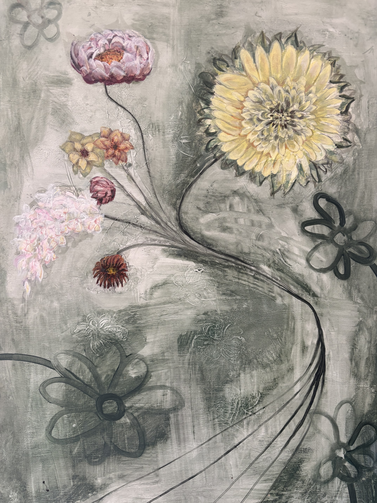
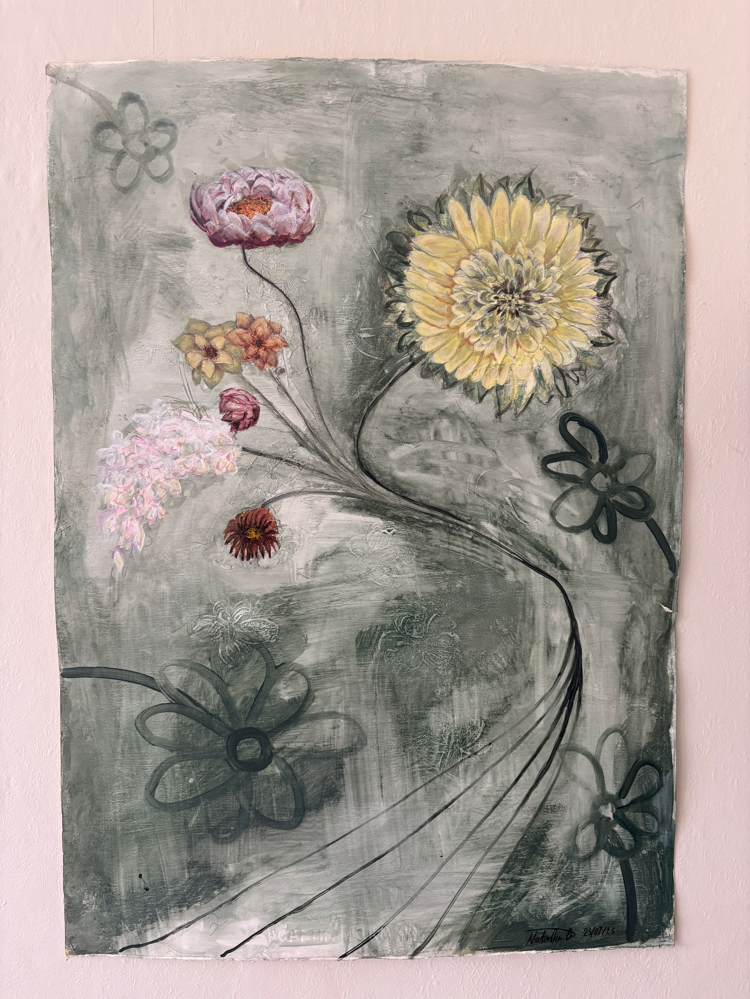
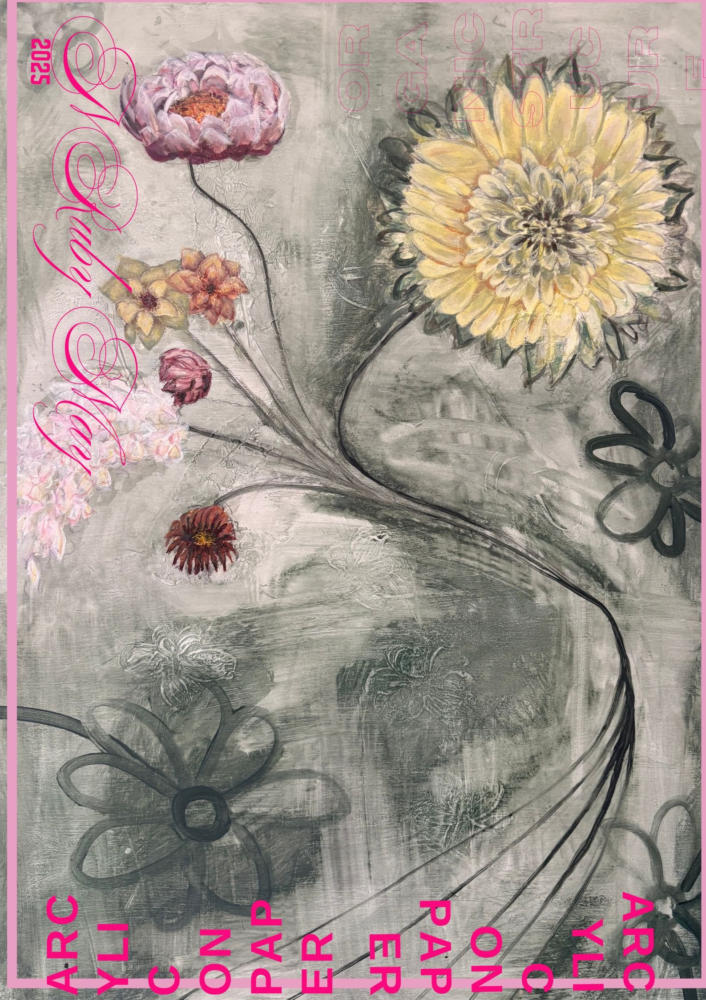

ORGANIC STRUCTURES
I love flowers and tend to scribble them in my notebooks. Within this painting, I wanted to contrast the architectural structure of flowers with the playful use of scribble. I used gesso to paint flowers into the background to create texture and mimic their natural forms, while the movement of the stalks was emphasised through loose finger painting. Together, these elements explore the contrast between organic structure and childlike expression.
completed 01/09/2025.
Arcylic on paper
42x59cm
$950
Available in prints + poster: $45 (A2) $20 (A4)
For purchase or further enquiries please email:
nrmbam05@gmail.com